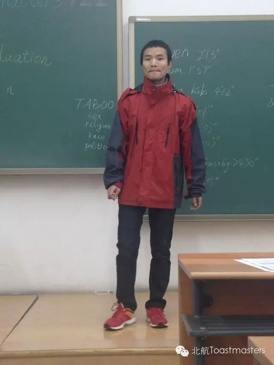
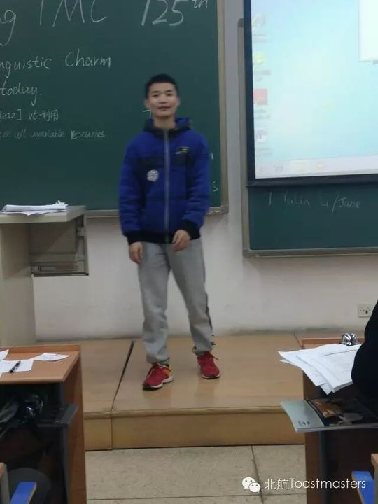
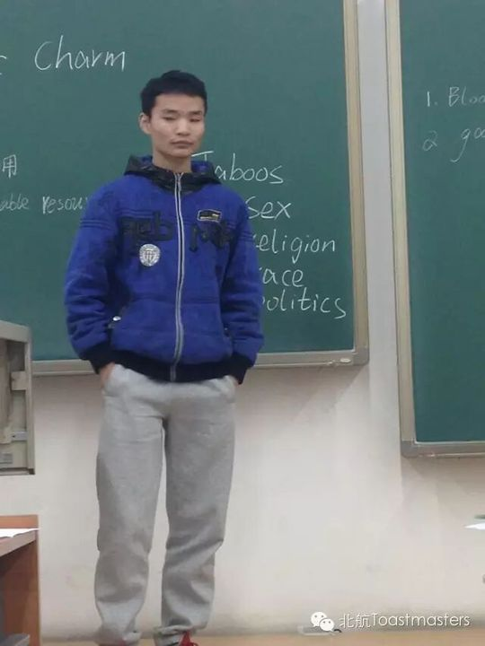
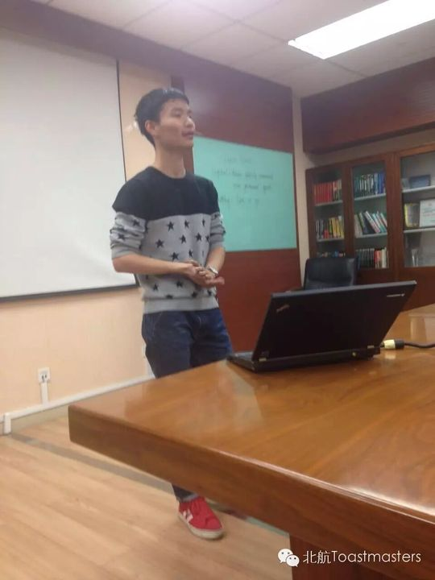
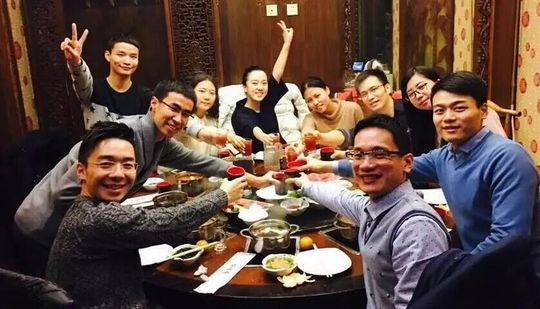
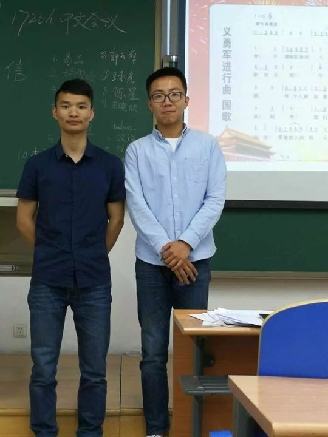
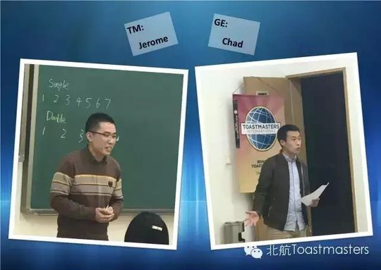
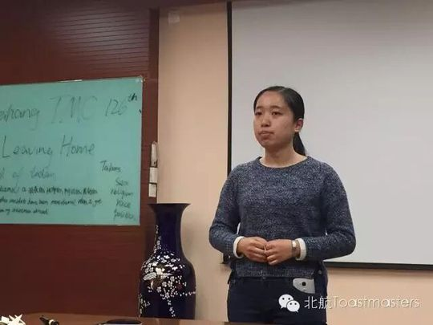

Gastby
易品（Gastby）是北航头马一位低调而长情的成员。他自比"邻家大男孩"，性格里带着工科男特有的羞涩——纪要里常被打趣"害羞的盖茨比"，连主持人都说他在德隆、书华、凯文几位"老师"的"教导"下才学会主动邀请女生上台。可一旦站上舞台，他又会瞬间放开：即兴环节里张嘴就来、信口杜撰一通故事，常常把全场逗得"哄堂大笑"，也因此两度捧走最佳即兴演讲者。
从2015年下半年起，他在备稿演讲的路上稳步前行：CC1《Just Ordinary》坦言自己只是个普通人，却相信"头马是造就了不起的人的地方"；CC2《Be a Rational Fan》讲做一个理性的粉丝，留下"不以物喜，不以己悲"的境界之语；CC3《My Emotional Doctor》则像他这样"Sheldon式"的腼腆少年，把藏在心底的小秘密讲了出来。2016年春季比赛，他作为英文演讲组选手代表"邻家大男孩"出战。
除了演讲者，他更是俱乐部里勤勤恳恳的主持人。他多次担任Toastmaster与Table Topics Master，从"朋友""旅行的意义""Tender""Movies""Plan your life"到端午专场，他设计话题、串联全场；尤其那次端午会议，他用一套精心设计的"纸牌配对"游戏规则承办即兴环节，足见用心。他还会吹竹笛——元旦晚会上一曲《飞雪玉花》《半月琴》是他的另一面才艺。
在那场元旦晚会上，他也参与了为即将工作的老会员Vance送别的"致不凡"环节。会议纪要里反复出现的，是他略带笨拙的真诚、自嘲式的幽默，以及那份始终如一对俱乐部的投入——一个不张扬却让人记得住的头马人。
完整足迹 · 29 次出现（点开，每条可跳转原文）
- 2015-10-26第115次 · 即兴演讲，与Lily演分手求安慰情景，并列获最佳即兴演讲者
- 2015-11-23第119次 · 即兴演讲，谈初中早恋
- 2015-12-01第120次 · 与Fiona搭档即兴演讲谈高考后去留
- 2015-12-14第122次 · 备稿演讲Just Ordinary (CC1)
- 2016-01-14第125次 · 即兴演讲谈网络评论，并做备稿演讲Be a Rational Fan (CC2)
- 2016-03-03第126次 · 与Vance搭档即兴演绎父子对话
- 2016-03-10第128次 · 英文演讲比赛选手(邻家大男孩)
- 2016-03-23第128次 · 128次会议即兴演讲
- 2016-03-24第130次 · 做CC3演讲《My Emotional Doctor》
- 2016-05-12第137次 · 担任137届会议主持
- 2016-05-17第137次 · 即兴演讲邀请女生互动，获最佳即兴演讲
- 2016-05-24第138次 · 即兴演讲谈灵魂伴侣标准
- 2016-06-02第140次 · 担任140届会议主持
- 2016-06-05第140次 · Jack and Rose@minutes of Beihang TMC 140
- 2016-06-09第141次 · Let's celebrate together@ BeihangTMC 141
- 2016-09-29第154次 · 旅行的意义@Beihang TMC 154th Meeting@19:30 Se
- 2016-10-26第156次 · R.M.B. @minutes of 北航 TMC 156rd Meeting
- 2016-11-17第159次 · Movies@Beihang TMC 159th Meeting@19:30 N
- 2016-11-22第159次 · Movies @minutes of 北航 TMC 159rd Meeting
- 2016-11-24第160次 · 朋友@Beihang TMC 160th Meeting@19:30 Nov.
- 2016-11-26第160次 · 朋友 @minutes of 北航 TMC 160th Meeting
- 2017-01-06第164次 · 元旦趴~~@minutes of Beihang TMC164th Meetin
- 2017-03-07第165次 · Spring Festival@minutes of Beihang TMC16
- 2017-04-06第169次 · Plan your life@BeihangTMC 169th Meeting
- 2017-04-23Love@BeiHangTMC-171th-Meeting Minutes
- 2017-05-05第172次 · 相信@BeiHangTMC 172th Meeting 19:30 May.5t
- 2017-05-18第174次 · Scope@Beihang TMC174th Meeting@19:30 May
- 2017-06-06第175次 · Ode to Joy@BeiHang TMC 175th Meeting Min
- 2017-10-12第182次 · @BeihangTMC 182th Meeting 19:30 Oct.13rd
闯关之路 · Competent Communication
做过的演讲 · 4 场
担任过的会议角色
里程碑
- 2015-10-26 早期活跃于即兴环节 ↗115届中文meeting与Lily搭档夺得最佳即兴演讲者。
- 2015-12-14 破冰首秀 CC1《Just Ordinary》 ↗122届完成第一篇备稿演讲，立志成为了不起的盖茨比。
- 2016-01-07 元旦晚会才艺与送别 ↗竹笛表演，并参与为老会员Vance送别的致不凡环节。
- 2016-03-11 代表俱乐部出征春季比赛 ↗作为英文演讲组选手参加2016 Spring Contest。
- 2016-05-13 主持Tender专场并获最佳即兴 ↗137届担任Toastmaster，同场被评为Best Table Topic Speaker。
为俱乐部做的事
- 多次担任例会Toastmaster与Table Topics Master，串联并设计当晚流程与话题
- 端午专场创新性地用纸牌配对游戏规则承办即兴演讲环节，活跃气氛
- 作为英文演讲组选手代表俱乐部参加2016年春季比赛
- 元旦晚会上以竹笛表演贡献才艺，并参与老会员送别仪式
- 以真诚而幽默的台风长期活跃于即兴环节，多次担当带动现场气氛的角色
照片墙 · 时间线

✓
✓
✓ ✓
✓ ✓
✓
✓ ✓
✓ ✓
✓ ✓
✓ ✓
✓ ✓
✓ ✓
✓ ✓
✓
✓ ✓
✓ ✓
✓ ✓
✓
✓ ✓
✓


